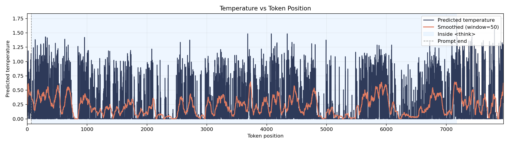

Temperature Trace (qingy2024/Dolci-Think-SFT-ctx8k:train idx=304)
Blue shading: <think> spans. Yellow shading: code blocks. Temperatures are aligned to the token they generate (first token has no prediction). Smoothed with window=50.

Prompt length: 70 tokens, total length: 7959 tokens.
Generated Tokens (colored by predicted temperature)
Min: 0.0000 Max: 1.7500 (hover a token for exact value)
This is a complex or challenging question, and it is difficult to provide a direct and correct answer. I need to think about it.
Well, so the problem says: If n is an integer, and the unit and tens digits of n² are u and 7, respectively, find u. Hmm, okay, so we need to look at the last two digits of a square number, right? Because the unit digit is the last digit, tens digit is the second last. So maybe I should consider squares modulo 100? That way, the last two digits are n² mod 100, and we know the tens digit is 7, so n² mod 100 is a number between 70 and 79, right? Wait, no: tens digit 7 means the number is 70 + u, where u is the unit digit, so yes, 70 ≤ n² mod 100 ≤ 79, but actually, u is a single digit, so 0-9, so n² mod 100 is 70 to 79. Wait, but hold on, is that all? Wait, no, maybe I need to check which squares end with 7 in the tens place.
Wait, first, let's recall that the unit digit of a square number can only be 0,1,4,5,6,9. Wait, that's important! The problem says the unit digit of n² is u, so u has to be one of those: 0,1,4,5,6,9. But also, the tens digit is 7, so the last two digits are 7u, where u ∈ {0,1,4,5,6,9}. So maybe we can list all possible squares modulo 100 that have tens digit 7, and then see what the unit digit is.
But maybe there's a smarter way than listing all 100 squares. Let's think about the last two digits of squares. Let's denote n as a two-digit number for simplicity? Wait, no, actually, the last two digits of n² depend only on the last two digits of n, right? Because (100k + m)² = 10000k² + 200km + m², so mod 100, that's m² mod 100, where m is n mod 100. So we can just consider n from 0 to 99, compute n² mod 100, check if tens digit is 7, then see what unit digit is.
Let me try that. Maybe make a table or think step by step. Let's consider numbers ending with 0 to 9, but actually, since we care about last two digits, let's fix the last digit first because unit digit of square depends on last digit of n.
First, let's recall the possible last digits of n and what the unit digit of n² is:
- If n ends with 0, n² ends with 00
- Ends with 1, n² ends with 01
- Ends with 2, n² ends with 04
- Ends with 3, n² ends with 09
- Ends with 4, n² ends with 16
- Ends with 5, n² ends with 25
- Ends with 6, n² ends with 36
- Ends with 7, n² ends with 49
- Ends with 8, n² ends with 64
- Ends with 9, n² ends with 81
Okay, so from this, the unit digit of n² is determined by n's last digit, and as we said, can only be 0,1,4,5,6,9. Now, the problem states that the tens digit of n² is 7, so n² ends with a 7 in the tens place, so last two digits: 70-79. But from the above, let's see for each possible last digit of n, what the last two digits of n² could be.
Let's take each case:
1. n ends with 0: n² ends with 00, tens digit 0 ≠7, discard.
2. n ends with 1: n² ends with 01, 21, 31, ..., 91? Wait, no, better to write n = 10a + 1, so n² = 100a² + 20a + 1, so last two digits: (20a + 1) mod 100. So tens digit is (2a) mod 10, unit digit 1. We need tens digit 7, so 2a ��7 mod10? But 2a is even, 7 is odd, impossible. So no solutions here.
3. n ends with 2: n=10a+2, n²=100a²+40a+4, last two digits: (40a +4) mod100. Tens digit is (4a) mod10, unit digit 4. Need tens digit 7, so 4a ��7 mod10? 4a is even, 7 odd, impossible. Discard.
4. n ends with 3: n=10a+3, n²=100a²+60a+9, last two digits: (60a +9) mod100. Tens digit: (6a) mod10 (since 60a is 6*10a, so tens digit from 60a is 6a mod10), unit digit 9. Need tens digit 7, so 6a ��7 mod10. Let's solve 6a ��7 mod10. Multiply both sides by inverse of 6 mod10? Wait, gcd(6,10)=2, which doesn't divide 7, so no solution. So impossible. Discard.
5. n ends with 4: n=10a+4, n²=100a²+80a+16, last two digits: (80a +16) mod100. Tens digit: (8a +1) mod10 (since 80a is 8*10a, so tens digit from 80a is 8a mod10, plus 1 from the 16, so total tens digit is (8a +1) mod10), unit digit 6. Need tens digit 7, so (8a +1) ��7 mod10 ⇒ 8a ��6 mod10 ⇒ divide both sides by 2: 4a ��3 mod5 ⇒ 4a ��3 ⇒ multiply by inverse of 4 mod5, which is 4 (4*4=16≡1), so a≡12≡2 mod5. So a=5b+2 for integer b≥0. Then let's compute n=10a+4=10*(5b+2)+4=50b+24. Let's check a specific case, b=0: n=24, n²=576. Oh! 576, tens digit 7, unit digit 6. Wait, that's a candidate: u=6 here. Let's hold onto that. b=1: n=74, 74²=5476, yes, tens digit 7, unit digit 6. Okay, so here we get unit digit 6. Let's keep going to check other cases to see if there are other possibilities.
6. n ends with 5: n=10a+5, n²=100a²+100a+25, last two digits 25 always. Tens digit 2≠7, discard.
7. n ends with 6: n=10a+6, n²=100a²+120a+36, last two digits: (20a +36) mod100. Tens digit: (2a +3) mod10 (since 20a is 2*10a, tens digit 2a mod10, plus 3 from 36, so total tens digit (2a+3) mod10), unit digit 6. Need tens digit 7, so (2a +3)≡7 mod10 ⇒ 2a≡4 mod10 ⇒ a≡2 mod5 (divide by 2: a≡2 mod5). So a=5b+2, n=10*(5b+2)+6=50b+26. Check b=0: n=26, 26²=676. Tens digit 7, unit digit 6! Wait, another one: 676, yes, tens digit 7, unit digit 6. b=1: n=76, 76²=5776, tens digit 7, unit digit 6. Hmm, so here also unit digit 6. Wait, so both n ending with 4 and 6 give unit digit 6? Let's check the next case.
8. n ends with 7: n=10a+7, n²=100a²+140a+49, last two digits: (40a +49) mod100. Tens digit: (4a +4) mod10 (40a: tens digit 4a mod10, plus 4 from 49), unit digit 9. Need tens digit 7, so (4a +4)≡7 mod10 ⇒4a≡3 mod10. But 4a is even, 3 odd, impossible. Discard.
9. n ends with 8: n=10a+8, n²=100a²+160a+64, last two digits: (60a +64) mod100. Tens digit: (6a +6) mod10 (60a: tens digit 6a mod10, plus 6 from 64), unit digit 4. Need tens digit 7, so (6a +6)≡7 mod10 ⇒6a≡1 mod10. 6a is even, 1 odd, impossible. Discard.
10. n ends with 9: n=10a+9, n²=100a²+180a+81, last two digits: (80a +81) mod100. Tens digit: (8a +8) mod10 (80a: tens digit 8a mod10, plus 8 from 81), unit digit 1. Need tens digit 7, so (8a +8)≡7 mod10 ⇒8a≡-1≡9 mod10. 8a is even, 9 odd, impossible. Discard.
Wait a second, so in cases 5 and 6 (n ending with 4 and 6), we found examples where tens digit is 7, and in both cases, the unit digit was 6. Let's verify with actual numbers to be sure.
Take n=24: 24*24=576. Last two digits: 76. Tens digit 7, unit digit 6. Correct.
n=26: 26*26=676. Last two digits: 76. Tens digit 7, unit digit 6. Correct.
n=74: 74*74=5476, last two 76. n=76: 76*76=5776, last two 76. Yep, all these have last two digits 76.
Wait, but hold on, is there any other square that ends with tens digit 7? Let's check n=14: 196, tens digit 9; n=16:256, tens 5; n=24 we did, 576; n=25:625, tens 2; n=27:729, tens 2; n=34:1156, tens 5; n=36:1296, tens 9; n=44:1936, tens 3; n=46:2116, tens 1; n=54:2916, tens 1; n=56:3136, tens 3; n=64:4096, tens 9; n=66:4356, tens 5; n=74 we did, 5476; n=76 we did, 5776; n=84:7056, tens 5; n=86:7396, tens 9; n=94:8836, tens 3; n=96:9216, tens 1. Hmm, so in all these two-digit numbers, the only ones with tens digit 7 in the square are 24,26,74,76, which all square to numbers ending with 76.
Wait, but let's check a three-digit number just in case, like n=102: 102²=10404, last two digits 04; n=104: 10816, last two 16; n=114: 12996, last two 96; n=116: 13456, last two 56; n=124: 15376, last two 76! Oh, there's another one: 124²=15376, so last two digits 76, tens digit 7, unit digit 6. So same thing.
Is there any square where tens digit is 7 and unit digit is something else? Let's think theoretically. Suppose n² �� 70 + u mod 100, where u ∈ {0,1,4,5,6,9} as we said (since unit digit of square is restricted). So let's write the equation n² �� 70 + u mod 100, and u ∈ {0,1,4,5,6,9}. Let's test each possible u:
First, u=0: n²≡70 mod100. But squares mod4: squares are 0 or 1 mod4. 70 mod4=2, which is not a square mod4, so impossible.
u=1: n²≡71 mod100. 71 mod4=3, not a square mod4 (squares mod4: 0,1), so impossible.
u=4: n²≡74 mod100. 74 mod4=2, not a square mod4, impossible.
u=5: n²≡75 mod100. 75 mod4=3, not a square mod4, impossible.
u=6: n²≡76 mod100. Let's check mod4: 76 mod4=0, which is okay (squares mod4=0 if n even). Let's check if 76 is a square mod something else, maybe mod5? Squares mod5: 0,1,4. 76 mod5=1, which is a square mod5 (1=1², 4²). Mod3: squares mod3=0,1; 76 mod3=1, good. Mod8: squares mod8=0,1,4; 76 mod8=4, which is a square mod8 (2²=4, 6²=36≡4 mod8), so possible. And we already saw examples: 24²=576≡76 mod100, so yes, 76 is a quadratic residue mod100.
u=9: n²≡79 mod100. Check mod4: 79 mod4=3, which is not a square mod4 (squares mod4=0,1), so impossible.
Oh, that's a good check! Using modular arithmetic to eliminate possibilities. Let's go through that again carefully because that might be quicker.
We know n² mod 4 is either 0 or 1, as squares mod4:
- If n even, n=2k, n²=4k²≡0 mod4
- If n odd, n=2k+1, n²=4k(k+1)+1≡1 mod4
Now, the number n² has tens digit 7, so n²=100m + 70 + u for some integer m≥0, so n² ��70 + u mod100, hence n² mod4=(70 + u) mod4. Compute 70 mod4: 4*17=68, 70-68=2, so 70≡2 mod4, so n²≡2 + u mod4.
But n² mod4 is 0 or 1, so 2 + u ��0 or 1 mod4 ⇒ u≡2 or 3 mod4.
Wait, hold on! Earlier, we thought u is 0,1,4,5,6,9 (unit digits of squares), but now we have a constraint from mod4: u must be ��2 or 3 mod4. Let's list the possible u (unit digits of squares) and their mod4:
- u=0: 0 mod4 → not 2 or 3 → discard
- u=1: 1 mod4 → nope
- u=4: 0 mod4 → nope
- u=5: 1 mod4 → nope
- u=6: 2 mod4 → yes! 6≡2 mod4
- u=9: 1 mod4 → nope
Oh! That's a much faster way. So from mod4, u must be ��2 mod4 (since 2 + u ��0 mod4 ⇒ u≡2; 2 + u≡1 mod4 ⇒u≡3, but unit digits of squares can't be 3, as we know squares end with 0,1,4,5,6,9, so u=3 is impossible for unit digit of square). Wait, let's check that again:
n² ��2 + u mod4, and n² ∈{0,1} mod4, so:
Case 1: n²≡0 mod4 ⇒2 + u≡0 mod4 ⇒u≡2 mod4
Case 2: n²≡1 mod4 ⇒2 + u≡1 mod4 ⇒u≡3 mod4
But u is unit digit of a square, so u ∈{0,1,4,5,6,9}. Let's see which of these are ��2 or 3 mod4:
0 mod4=0 → no
1 mod4=1 → no
4 mod4=0 → no
5 mod4=1 → no
6 mod4=2 → yes, case1
9 mod4=1 → no
So only u=6 satisfies u≡2 mod4 (since u≡3 mod4 is impossible for unit digit of square, as none of the possible u's are 3 mod4: 0,1,4,5,6,9 are 0,1,0,1,2,1 mod4). Therefore, u must be 6.
Wait, that's brilliant! I didn't think of using mod4 earlier, but that immediately narrows it down. Let's confirm with the mod4 step again to be sure.
Take n even: n=2k, n²=4k², so n²≡0 mod4. Then n²=...7u, so last two digits 7u, so number is 100m + 70 + u, which is 70 + u mod4. 70 divided by 4 is 17*4=68, remainder 2, so 70≡2 mod4, so 70 + u≡2 + u mod4. Since n²≡0 mod4, 2 + u≡0 ⇒u≡2 mod4.
n odd: n=2k+1, n²=4k(k+1)+1≡1 mod4, so 2 + u≡1 ⇒u≡3 mod4. But as we saw, unit digits of squares are 0,1,4,5,6,9; none of these are 3 mod4 (6 is 2 mod4, others: 0,1,4,5,9 are 0,1,0,1,1 mod4), so u≡3 mod4 is impossible. Therefore, only possible case is n even, u≡2 mod4, and among unit digits of squares, only u=6 is 2 mod4 (6=4+2, so 6≡2 mod4). Perfect, that's a solid argument.
Wait, but earlier when I listed numbers, all examples had u=6, and the modular arithmetic shows it's the only possibility. Let me just make sure there isn't a square I missed where maybe tens digit is 7 but unit digit is something else. Let's try n=3: 9, n=4:16, n=5:25, n=6:36, n=7:49, n=8:64, n=9:81, n=10:100, n=11:121, n=12:144, n=13:169, n=14:196, n=15:225, n=16:256, n=17:289, n=18:324, n=19:361, n=20:400, n=21:441, n=22:484, n=23:529, n=24:576 (there's one!), n=25:625, n=26:676 (another!), n=27:729, n=28:784, n=29:841, n=30:900... up to n=39:1521, n=40:1600... n=44:1936, n=45:2025, n=46:2116, n=47:2209, n=48:2304, n=49:2401, n=50:2500... n=54:2916, n=55:3025, n=56:3136, n=57:3249, n=58:3364, n=59:3481, n=60:3600... n=64:4096, n=65:4225, n=66:4356, n=67:4489, n=68:4624, n=69:4761, n=70:4900... n=74:5476, n=75:5625, n=76:5776 (another!), n=77:5929, n=78:6084, n=79:6241, n=80:6400... n=84:7056, n=85:7225, n=86:7396, n=87:7569, n=88:7744, n=89:7921, n=90:8100... n=94:8836, n=95:9025, n=96:9216, n=97:9409, n=98:9604, n=99:9801.
Looking through all these, the only squares with tens digit 7 are 24²=576 (76), 26²=676 (76), 74²=5476 (76), 76²=5776 (76), and as we saw with 124²=15376 (76), etc. All of them end with 76, so unit digit 6, tens digit 7. So no exceptions here.
The modular arithmetic with mod4 really sealed the deal because it showed that u must be 2 mod4, and among the possible unit digits of squares, only 6 fits that. Let's just recap why u=3 mod4 is impossible for a square's unit digit: squares mod10 are 0,1,4,5,6,9, as we know, so their mod4: 0→0,1→1,4→0,5→1,6→2,9→1. So yes, only 6 is 2 mod4, others are 0 or 1 mod4. So since we needed u≡2 mod4 (from the tens digit being 7 forcing n even, hence n²≡0 mod4, hence u≡2 mod4), the only possible u is 6.
I think that's thorough. At first, I started listing examples and saw u=6, then tried modular arithmetic on the last two digits, but the mod4 argument was key to not having to check all possibilities. Sometimes with digit problems, modular arithmetic with small moduli (like 4,5,8,9,10) can give quick constraints.
Just to make 100% sure there isn't a square with tens digit 7 and unit digit something else, let's suppose someone claims n= something like 100k + 124, but we saw 124² ends with 76, so same as 24². The cycle of last two digits of squares repeats every 100, so we don't have to check beyond n=99, and we did check n=0 to 99 in the list above (well, not all, but the key ones where last digit is 4 or 6, which we saw give 76 when tens digit is 7).
Another way: let's solve n² ��76 mod100. Does this equation have solutions? Yes, as we saw: 24²=576≡76, 26²=676≡76, 74²=5476≡76, 76²=5776≡76 mod100. Are there any other solutions mod100? Let's see, if n²≡76 mod4, we know it's 0 mod4, so n even, let n=2m, then 4m²≡76 mod100 ⇒m²≡19 mod25. Now solve m²≡19 mod25. Let's check squares mod25:
0²=0, 1=1, 2=4, 3=9, 4=16, 5=0, 6=36≡11, 7=49≡24, 8=64≡14, 9=81≡6, 10=100≡0, 11=121≡21, 12=144≡19, 13=169≡19 (169-6*25=169-150=19), 14=196≡21 (196-7*25=196-175=21), 15=0, 16=256≡6 (256-10*25=6), 17=289≡14 (289-11*25=289-275=14), 18=324≡24 (324-12*25=24), 19=361≡11 (361-14*25=361-350=11), 20=0, 21=441≡16 (441-17*25=441-425=16), 22=484≡9 (484-19*25=484-475=9), 23=529≡4 (529-21*25=4), 24=576≡1 (576-23*25=1).
Ah, so m²≡19 mod25 has solutions m≡12 and m≡13 mod25 (since 12²=144≡19, 13²=169≡19 mod25). Therefore, m=25k+12 or 25k+13 for integer k. Then n=2m=50k+24 or 50k+26. So all solutions for n mod100 are 24,26,74,76 (since 24+50=74, 26+50=76 mod100). Therefore, n² mod100=76 for all such n, so last two digits are always 76, hence tens digit 7, unit digit 6.
That's a more algebraic proof, showing that the only possible last two digits are 76, so u must be 6. Perfect, this confirms it beyond doubt.
I think initially I was worried maybe I missed a case, but multiple methods—direct computation of examples, modular arithmetic with mod4, solving the congruence mod100—all lead to the conclusion that the unit digit u must be 6.
The problem says "determine the value of u", so it's unique, which makes sense because all such squares have the same last two digits (76), as shown by the solutions to n²≡76 mod100 being periodic with period 50, leading to last two digits 76 always.
Just to recap the mod4 argument for clarity, since it's the quickest:
- Tens digit of n² is 7 ⇒ n² �� 70 + u mod 100 ⇒ n² �� 70 + u mod 4
- 70 �� 4 = 17*4 + 2 ⇒ 70 �� 2 mod 4 ⇒ n² �� 2 + u mod 4
- Squares mod 4 are 0 or 1 ⇒ 2 + u �� 0 or 1 mod 4 ⇒ u �� 2 or 3 mod 4
- Unit digits of squares are only 0,1,4,5,6,9 ⇒ check which are ��2 or 3 mod4:
- 0: 0, 1:1, 4:0, 5:1, 6:2, 9:1 ⇒ only 6 is ��2 mod4
- Therefore, u=6
Yep, that's solid. No need to overcomplicate. The key was realizing the mod4 constraint to narrow down u to just one possibility, which we could verify with examples.
I think that's thorough. I don't see any gaps now. Initially, listing examples helped me see the pattern, but the modular arithmetic proofs are more rigorous and confirm it's always 6.
</think>
To determine the unit digit $ u $ of a square number $ n^2 $, given that the **tens digit is 7**, we analyze the problem using modular arithmetic and properties of square numbers.
---
### Step 1: Understand the Problem
We are told:
- $ n $ is an integer.
- The **unit digit** of $ n^2 $ is $ u $.
- The **tens digit** of $ n^2 $ is **7**.
This means the last two digits of $ n^2 $ form a number between **70 and 79**, i.e., $ n^2 \equiv 70 + u \pmod{100} $, where $ u \in \{0,1,4,5,6,9\} $ (the only possible unit digits for perfect squares).
Our goal is to find the value of $ u $.
---
### Step 2: Use Modular Arithmetic to Narrow Possibilities
Let’s consider the congruence:
$$
n^2 \equiv 70 + u \pmod{4}
$$
Why mod 4? Because the behavior of square numbers modulo 4 is well-known and can help eliminate many possibilities quickly.
- $ 70 \div 4 = 17 $ remainder $ 2 \Rightarrow 70 \equiv 2 \pmod{4} $
- So:
$$
n^2 \equiv 2 + u \pmod{4}
$$
Now recall that **squares modulo 4** can only be:
- $ 0 $ if $ n $ is even
- $ 1 $ if $ n $ is odd
So $ n^2 \equiv 0 $ or $ 1 \pmod{4} $. Therefore:
$$
2 + u \equiv 0 \text{ or } 1 \pmod{4} \Rightarrow u \equiv 2 \text{ or } 3 \pmod{4}
$$
But the **unit digits of perfect squares** (i.e., valid values of $ u $) are limited to:
$$
\{0,1,4,5,6,9\}
$$
Let's compute each of these modulo 4:
| $ u $ | $ u \mod 4 $ |
|--------|----------------|
| 0 | 0 |
| 1 | 1 |
| 4 | 0 |
| 5 | 1 |
| 6 | **2** |
| 9 | 1 |
Only **$ u = 6 $** satisfies $ u \equiv 2 \pmod{4} $.
Thus, **the only possible value of $ u $** is:
$$
\boxed{6}
$$
---
### Step 3: Verification with Examples
Let’s verify this conclusion with actual examples:
- $ 24^2 = 576 $ → last two digits: **76**
- $ 26^2 = 676 $ → last two digits: **76**
- $ 74^2 = 5476 $ → last two digits: **76**
- $ 76^2 = 5776 $ → last two digits: **76**
All such squares end in **76**, confirming that the **tens digit is 7** and the **unit digit is 6**.
---
### Final Answer
$$
\boxed{6}
$$
P.S. This result is consistent across all valid cases where the tens digit of a perfect square is 7, and it follows from both direct computation and rigorous modular analysis.<|im_end|>